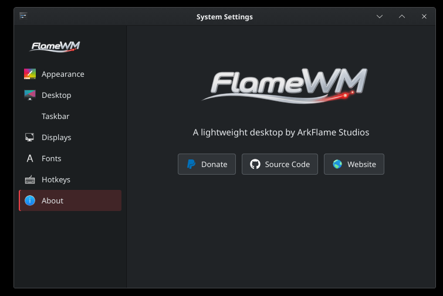
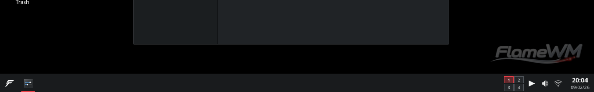

Familiar by default
Start on the left. Applications in the taskbar. Workspaces, status controls, clock and conventional window buttons where desktop users already expect them.
FlameWM is IceWM made friendly by ArkFlame Studios — a lightweight desktop built around the familiar workflow of modern Windows and KDE, without importing a heavyweight desktop shell.
A lightweight desktop should still feel complete.
FlameWM keeps IceWM's mature window-management engine underneath and replaces the exposed configuration-heavy experience with deliberate defaults, a coherent taskbar, simple settings, modern window layouts and native system controls.
Start on the left. Applications in the taskbar. Workspaces, status controls, clock and conventional window buttons where desktop users already expect them.
The shell stays native and event-driven. No Qt, GTK, QML, Electron or web runtime is required to make the FlameWM desktop itself work.
The desktop is a product, not a construction kit. The useful path is visible; advanced IceWM configuration can remain an expert escape hatch.
Appearance, desktop, taskbar, displays, fonts and hotkeys are presented as direct choices. Change the wallpaper, accent, taskbar edge or size without learning IceWM preference files or raw pixel geometry.

FlameWM turns IceWM's panel foundations into a modern desktop taskbar: Start, pinned and running applications, workspaces, media, audio, networking, tray items and clock — with deliberate spacing and no legacy monitor clutter by default.

FlameWM keeps IceWM's proven window, workspace and task state authorities, then adds the interaction layer desktop users expect today.
Drag to halves, corners or the top edge and get a clear placement preview before the window commits.
Runtime workspaces, directional navigation and drag-through-edge movement use IceWM's existing desktop engine instead of a second state system.
Files, folders, grid placement, selection and FlameWM's desktop identity belong to a lightweight desktop layer rather than a resident heavyweight file manager.
Audio, Wi-Fi and media controls are designed as small event-driven integrations with the Linux services already responsible for those systems.
Safe appearance changes apply live. The interface exposes semantic choices instead of turning every metric into another number the user must tune.
Memory, startup time, idle CPU and wakeups are measured rather than assumed. Permanent processes must justify their cost.
FlameWM is not a rewrite of a working window manager. IceWM keeps ownership of windows, focus, workspaces, work areas, task state, tray behavior and X11 protocol correctness. FlameWM owns what people see and how normal desktop actions feel.
Read the source on GitHubFollow FlameWM development, inspect the IceWM-based implementation, report issues or support ArkFlame Studios.